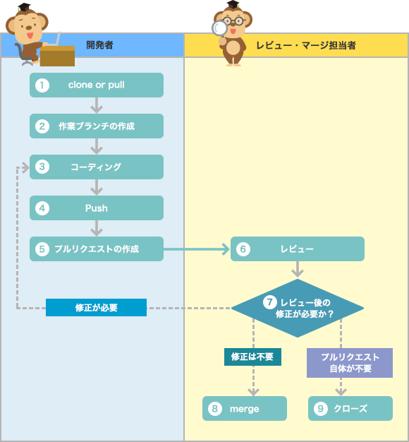

Pull Request
使用Pull Request的開發流程
使用Pull Request的流程如下所示。
- [ 開發者 ] 將要作業的原始碼進行複製（clone）或Pull。
- [ 開發者 ] 建立作業用的分支。
- [ 開發者 ] 進行功能新增、修改等開發工作。
- [ 開發者 ] 作業完成後進行Push。
- [ 開發者 ] 建立Pull Request。
- [ 審核、合併負責人 ] 從收到通知的Pull Request確認變更內容並進行審核。
- [ 審核、合併負責人 ] 判斷審核結果，如有需要則給予開發者回饋。
- [ 審核、合併負責人 ] 審核結果沒有問題的話就進行合併。
- [ 審核、合併負責人 ] 審核結果如果發現不需要進行該項對應等情況，則關閉該Pull Request。
上述的第3到第7個步驟會視需要重複進行。如此一來，最終被合併的原始碼品質就能夠提升。
